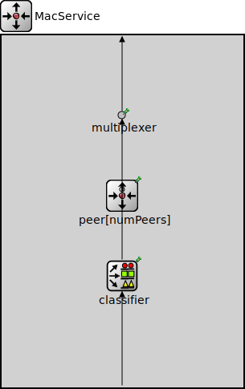

Package: inet.protocolelement.service
MacService
compound module(no description)
Usage diagram
The following diagram shows usage relationships between types. Unresolved types are missing from the diagram.
Parameters
| Name | Type | Default value | Description |
|---|---|---|---|
| numPeers | int | 0 |
Properties
| Name | Value | Description |
|---|---|---|
| display | i=block/routing |
Gates
| Name | Direction | Size | Description |
|---|---|---|---|
| in | input | ||
| out | output |
Unassigned submodule parameters
| Name | Type | Default value | Description |
|---|---|---|---|
| multiplexer.displayStringTextFormat | string | "passed %p pk (%l)" |
determines the text that is written on top of the submodule |
| multiplexer.forwardServiceRegistration | bool | true | |
| multiplexer.forwardProtocolRegistration | bool | true | |
| peer.multiplexer.displayStringTextFormat | string | "passed %p pk (%l)" |
determines the text that is written on top of the submodule |
| peer.multiplexer.forwardServiceRegistration | bool | true | |
| peer.multiplexer.forwardProtocolRegistration | bool | true | |
| peer.defragmenter.displayStringTextFormat | string | "processed %p pk (%l)" |
determines the text that is written on top of the submodule |
| peer.defragmenter.deleteSelf | bool | false | |
| peer.defragmenter.headerPosition | string | "front" | |
| peer.classifier.displayStringTextFormat | string | "classified %p pk (%l)" |
determines the text that is written on top of the submodule |
| peer.classifier.reverseOrder | bool | false | |
| peer.classifier.classifierClass | string |
determines the output queue of packets, the parameter must be the name of a C++ class which implements the IPacketClassifierFunction interface and is registered via Register_Class |
|
| peer.classifier.submoduleName | string | ||
| peer.classifier.moduleType | string | ||
| classifier.displayStringTextFormat | string | "classified %p pk (%l)" |
determines the text that is written on top of the submodule |
| classifier.reverseOrder | bool | false | |
| classifier.classifierClass | string |
determines the output queue of packets, the parameter must be the name of a C++ class which implements the IPacketClassifierFunction interface and is registered via Register_Class |
|
| classifier.submoduleName | string | ||
| classifier.moduleType | string |
Source code
module MacService { parameters: int numPeers = default(0); @display("i=block/routing"); gates: input in; output out; submodules: multiplexer: PacketMultiplexer { @display("p=150,100"); } peer[numPeers]: PeerService { @display("p=150,200,row,100"); } classifier: DynamicClassifier { @display("p=150,300"); } connections: in --> classifier.in; for i=0..numPeers - 1 { classifier.out++ --> multiplexer.in++; } multiplexer.out --> out; }File: src/inet/protocolelement/service/MacService.ned
 This documentation is released under the Creative Commons license
This documentation is released under the Creative Commons license